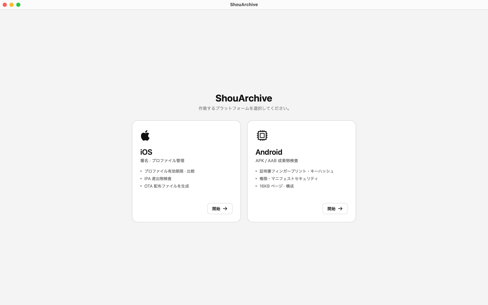
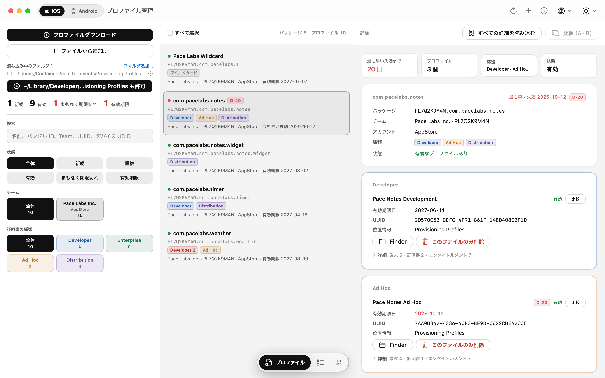
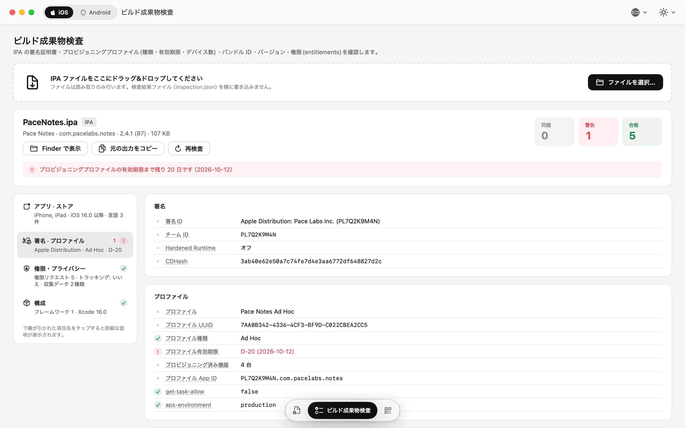
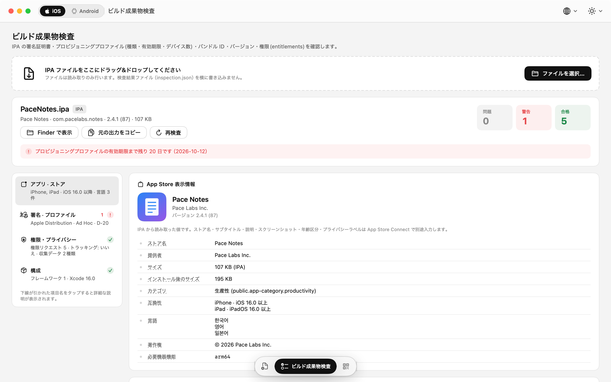
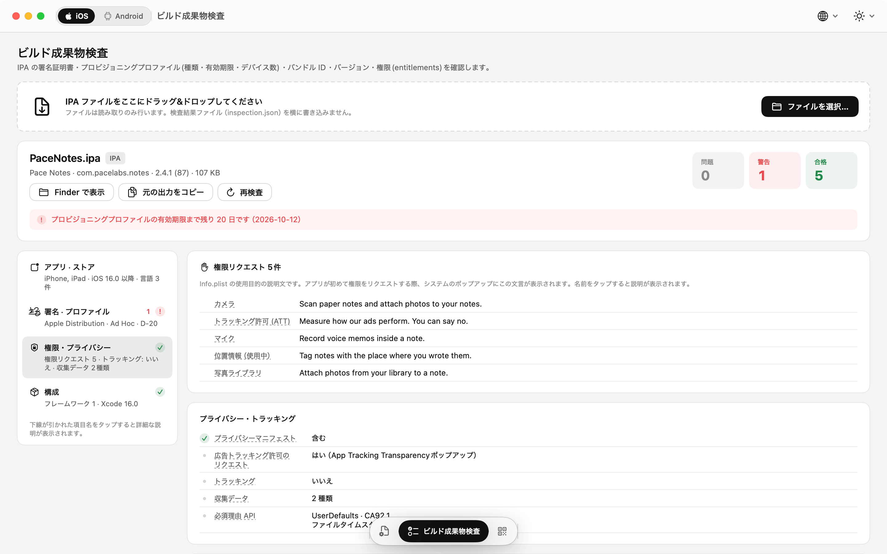
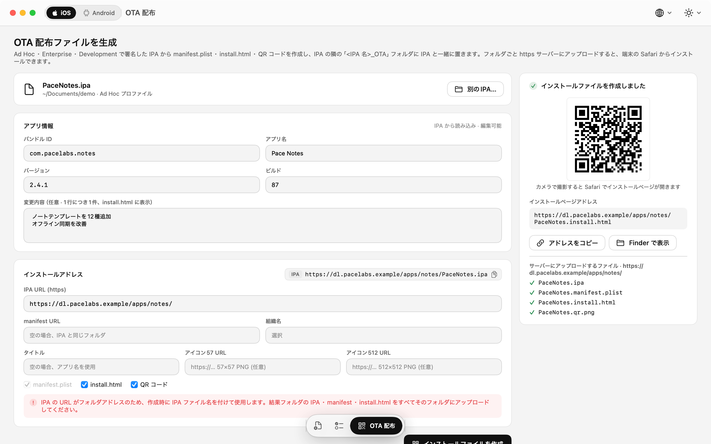
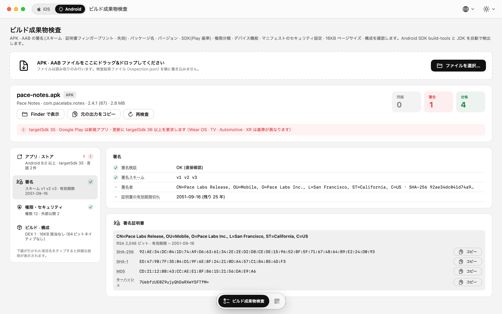
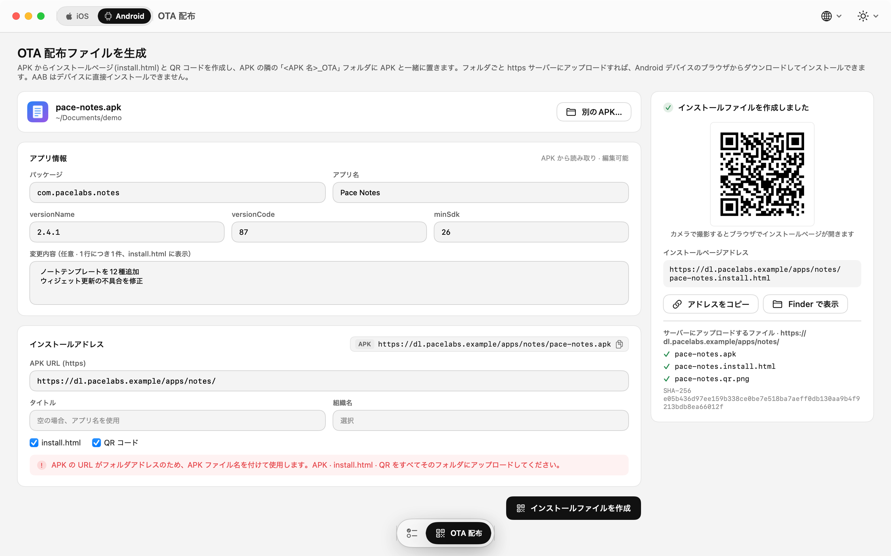

インストール済みプロファイル
- すべての行に D-N 有効期限バッジ — 30 日以内はオレンジ、期限切れは赤
- フィルター: 全体 · 新規 · 重複 / 有効 · まもなく期限切れ · 期限切れ
- 詳細表示: 端末 UDID、含まれる証明書（SHA-1 · SHA-256）、Entitlements を項目ごとにコピー可能
- 2 つのプロファイルを並べて比較 — 端末・証明書・Entitlements の差分を表示
.mobileprovisionファイルをドラッグして追加、複数選択して削除
プロファイル管理 · ビルド成果物検査 · OTA 配布ファイル — リリース直前に確認すべきことを、1 つのアプリで。
IPA・APK・AAB を開いて、ストアに表示される情報、署名、要求する権限をその場で確認。プロビジョニングプロファイルは有効期限とあわせて整理。テストビルド用の OTA インストールページも生成できます。ファイルが Mac の外に出ることはありません。
macOS 15 Sequoia 以降 · Apple Silicon · Intel
プロファイル
Xcode がインストールしたプロファイルを一目で確認。App Store Connect API キーを追加すれば、プロファイルのダウンロード・作成・更新までアプリの中で完結します。
.mobileprovision ファイルをドラッグして追加、複数選択して削除使用するのは Issuer ID、Key ID、.p8 ファイルだけです。キーは Mac に置いたまま、リクエストトークンはローカルで署名します。
ビルド成果物検査
ファイルをドロップするだけで、外部ツールなしにその場で解析します。ストア掲載情報から署名・権限・セキュリティ設定まで、すべての項目にわかりやすい説明が付いています。
製品ページに表示される値のうち、成果物から直接読み取れるものです。
…UsageDescription）— 空のものがあれば警告読み取り専用です。ファイルを変更せず、隣に何も書き込まず、どこにもアップロードしません。
OTA 配布
手元の IPA や APK から、インストールページと QR コードを生成します。生成されたファイルをご自身の https サーバーにアップロードすれば完了です。
manifest.plist、install.html、そして itms-services:// インストールリンクの QR コードinstall.html画面
ライト・ダーク・システムのテーマ、85〜150 % の文字サイズ。タブはウインドウ下部のアイコンメニューから切り替えます。








動作環境